DFMPro のインストール中に、既存のデータベースファイルを上書きする許可を求める警告メッセージが表示されます。
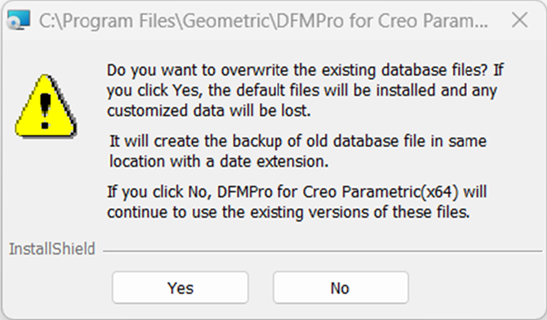
データベースファイルを上書きするための警告メッセージ
Yes ボタンをクリックして、既存のデータベースファイルを上書きします。この処理により、次の場所に日付拡張子付きのバックアップファイルが作成されます。
ドライブ C:\ProgramData\GeometricLtd\DFMPro\DFMDataBase
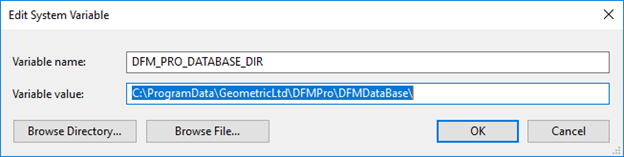
Yes を選択した場合、次の機能を利用できるようになります。
DFMPro for Creo Parametric 6.1 バージョン以降では、ルールマネージャー（Rule Manager）ダイアログボックス内で Map Material ボタンが利用可能です。
DFMPro for Creo Parametric 8.0 バージョン以降では、ルールマネージャー（Rule Manager）ダイアログボックス内で Material Property ボタンが利用可能です。
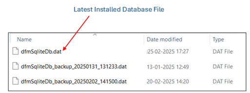
No ボタンをクリックすると、上書き処理を回避してインストールを続行します。この場合、既存のデータベースのみが使用可能となり、新しい拡張機能にはアクセスできません。Rule Manager ダイアログボックス内のボタンは無効状態になります。
新しいデータベースは、将来使用するために %DFM_PRO_DATABASE_DIR% に配置されます。
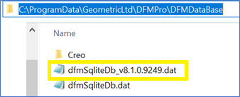
このアプリケーションは %DFMPro_ProE_Installation% の場所にあり、既存のデータベースをアップグレードするために使用できます。
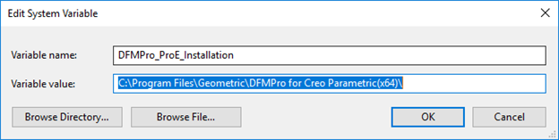
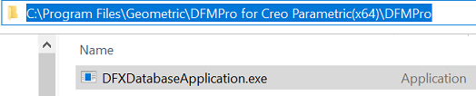
CMD（コマンド プロンプト） アプリケーションを管理者として開きます。
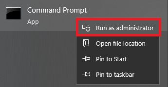
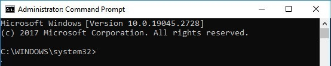
下図に記載されている入力を、スペースで区切って入力してください。
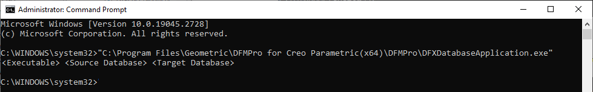
ここで、
Executable: DFXDatabaseApplication.exe のパス
例: "C:\Program Files\Geometric\DFMPro for Creo Parametric(x64)\DFMPro\DFXDatabaseApplication.exe"
Source Database: %DFM_PRO_DATABASE_DIR% にバックアップとして存在する最新のデータベース
例: "C:\ProgramData\GeometricLtd\DFMPro\DFMDataBase\dfmSqliteDb_v8.1.0.9249.dat"
Target Database: DFMPro の最新リリースでアップグレードする必要があるデータベース
例: "C:\ProgramData\GeometricLtd\DFMPro\DFMDataBase\dfmSqliteDb.dat"
例:
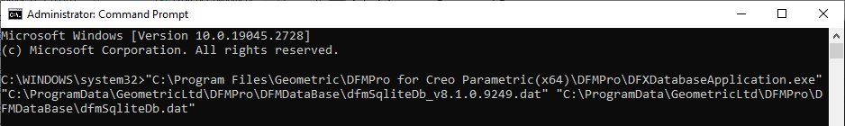
すべてのパスを入力したら Enter キーを押します。現在のデータベースのバックアップを作成した後、新しく追加されたテーブル／列をターゲットデータベースにマージします。
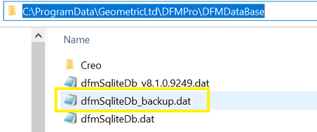
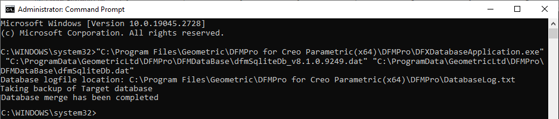
注:
このユーティリティを実行する前に、既存のデータベースのバックアップを作成することを推奨します。
生成されたログファイルの場所は、参照用に CMD に表示されます。
例: Database logfile location: C:\Program Files\Geometric\DFMPro for Creo Parametric(x64)\DFMPro\DatabaseLog.txt
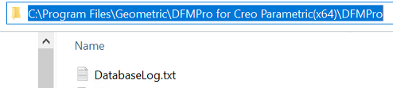
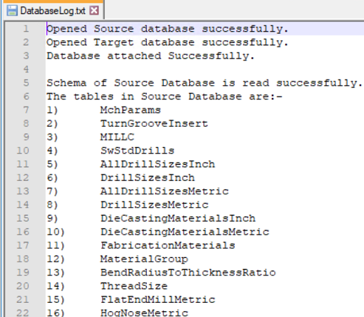
DatabaseLog.txt
手動インストールの場合に記載した同じ手順に従い、インストールパッケージに含まれる Source Database: を使用してください。